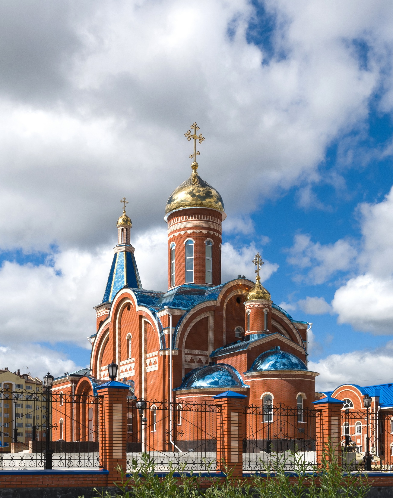
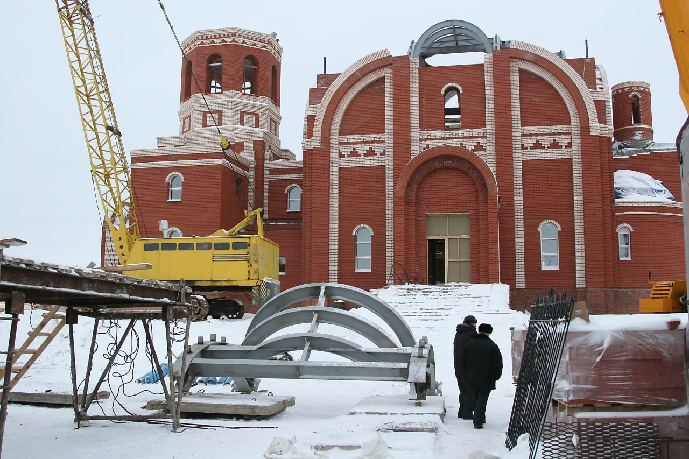
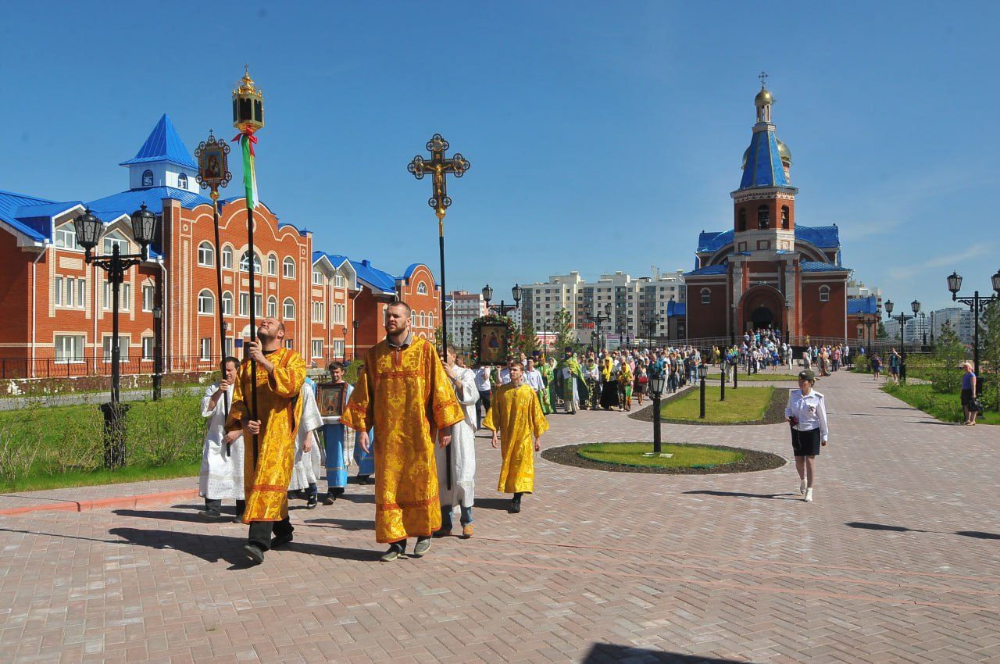
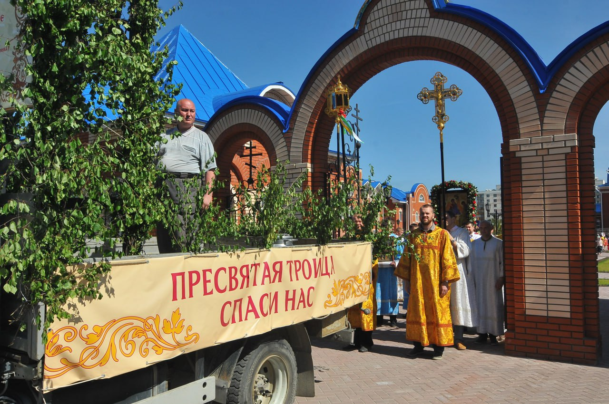
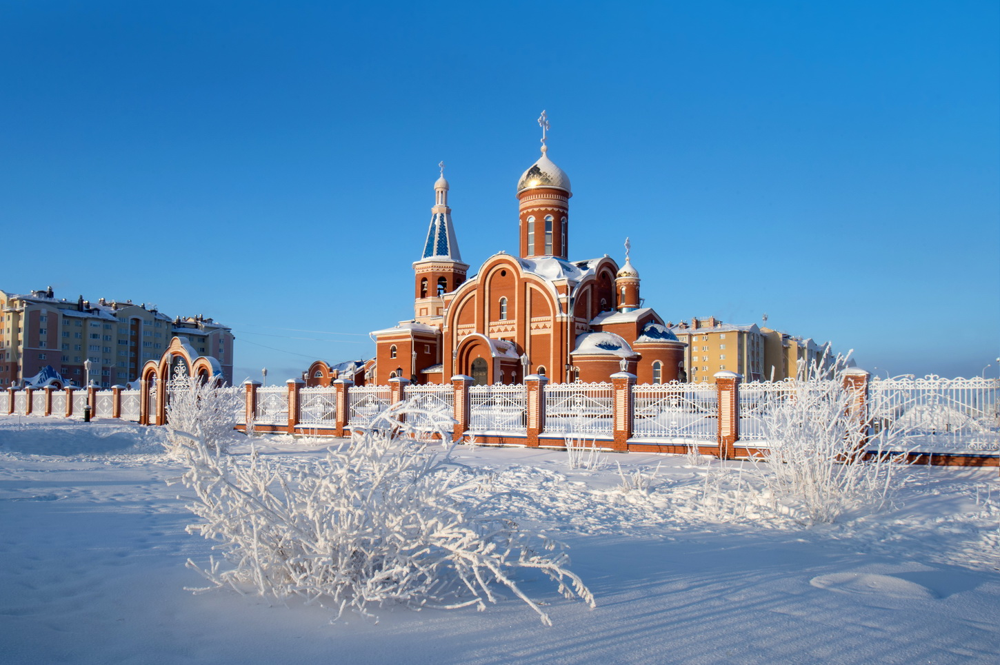

мкр. Оптимистов 1
Храм в честь Богоявления – одно из главных украшений Нового Уренгоя. Высокое и величественное здание находится в южном районе газовой столицы. Вместимость двухуровневого собора составляет 650 человек, высота – 36 метров.

Строительство православного церковного комплекса «Богоявленский собор» началось в 2007 году. Это решение стало ответом на насущную проблему. Храм преподобного Серафима Саровского, построенный в 1998 году, перестал вмещать всех прихожан. Особенно очевидным это становилось в дни великих христианских праздников. Место для будущего храма в октябре 2007 года освятил архиепископ Тобольский и Тюменский Димитрий. В этом же году был создан Попечительский совет по возведению новой церкви. Генеральным подрядчиком на объекте, заказчиком-застройщиком выступила ОАО «Инженерно-строительная компания».
В марте 2008 года в Новом Уренгое освятили первую сваю на площадке строительства Богоявленского собора. Утром в храме Серафима Саровского прошла Божественная литургия. После этого священники, прихожане, учащиеся православной гимназии и воскресной школы отправились к месту строительства собора, где протоиерей Олег Нелин совершил молебен и освящение.
Целевое финансирование для возведения религиозных объектов не предусмотрено законодательством, поэтому все работы производились за счёт пожертвований прихожан, средств, перечисленных от городских предприятий и организаций, собранных на марафонах и других благотворительных акциях. Всего в Новом Уренгое было проведено семь благотворительных марафонов по сбору средств на строительство Богоявленского собора. Горожане, предприниматели и предприятия пожертвовали около 300 000 000 рублей. Среди оказавших помощь в строительстве церковного комплекса градообразующие предприятия ООО «Газпром добыча Уренгой», ООО «Газпром добыча Ямбург», предприятия малого ТЭКа, представители малого и среднего бизнеса, муниципальные предприятия и организации, трудовые коллективы и частные лица. Поступило много анонимных пожертвований, отправленных, в том числе, и через банкоматы. Посильный вклад в строительство внесли предприятия города, безвозмездно предоставив технику и стройматериалы.
В мае 2010 года в газовую столицу приехала бригада строителей для возведения собора. На стройплощадке Богоявленского храма в Новом Уренгое наступила горячая пора. К августу здание церкви заметно выросло и приобрело законченные черты.

В марте 2011 года на специальную конструкцию, доставленную с челябинского завода, установлен колокольный комплекс. На ней расположились девять колоколов весом от 6 до 1 200 кг. Колокола приобретены на пожертвования новоуренгойских компаний. Первый в истории Богоявленского храма концерт колокольного звона стал ярким событием в культурной жизни города.
В феврале 2012 года настоятель новоуренгойского православного прихода храма прп. Серафима Саровского, иерей Олег Нелин освятил купола, после чего их подняли и установили на кровле храма. На церемонии присутствовали высокие гости: заместитель полномочного представителя президента РФ в Уральском федеральном округе Сергей Сметанюк, губернатор Ямала Дмитрий Кобылкин, глава администрации города Новый Уренгой Иван Костогриз. Посмотреть на величественное действие пришли многие верующие горожане. За несколько часов работы тяжелой техники и специалистов по кровельным работам, Богоявленский собор обрёл совсем иной вид, устремив в небо золотые купола, увенчанные православными крестами.
В сентябре 2014 года в храме завершили монтаж иконостаса. Его изготовили и установили специалисты творческих мастерских «Благое дело» из города Хотьково, что в Московской области. Иконостас расписан московскими иконописцами и украшен сусальным золотом. Сложная конструкция выполнена в стиле древнерусской резьбы, с применением традиционных материалов: дерева и позолоты на натуральном левкасе (грунт для деревянных поверхностей из мела и клея). Такая технология позволяет дереву «дышать», благодаря этому иконостас может стоять столетия.
К лету 2014 года в храме была выполнена чистовая отделка стен и потолков, установлены вентиляция, инженерные сети тепло- и водоснабжения, канализация. Подошли к завершению работы по устройству полов и внутреннего электроснабжения. В церковно-причтовом доме, перепрофилированном в гимназию со спортзалом, проходила чистовая отделка во всех помещениях. Территорию перед гимназией заасфальтировали, а перед зданием храма - покрыли тротуарной плиткой.
7 сентября 2014 года в газовой столице освятили и открыли новое здание Православной гимназии.
Этого события педагоги учебного заведения и его воспитанников ждали много лет: старое здание школы с пятью кабинетами и трапезной с трудом вмещало учащихся девяти классов. Новая страница в истории православной гимназии открылась в 39-й день рождения Нового Уренгоя и незадолго до 16-летия учебного заведения. На торжественном событии присутствовали глава арктического региона Дмитрий Кобылкин, врио губернатора Тюменской области Владимир Якушев, епископ Салехардский и Новоуренгойский Николай, глава администрации города Новый Уренгой Иван Костогриз.
«Сегодня открывается новая веха в истории гимназии. Она получила прекрасную возможность раскрыть свой потенциал. Рядом с гимназией стоит храм, напоминающий ребятам о самом высоком, чистом, светлом. А молитвы, которые будут совершаться в этом храме, всегда будут упоминать имена людей, которые причастны к такому большому делу», – обратился к присутствующим епископ Салехардский и Новоуренгойский Николай
Управляющий Салехардской епархией, архиепископ Николай освятил здание и наградил архиерейской грамотой «За особое внимание к духовно-нравственному, патриотическому воспитанию детей и молодёжи и за неоценимое участие в строительстве Православной гимназии в г. Новый Уренгой» губернатора ЯНАО Дмитрия Кобылкина, первого заместителя губернатора ЯНАО Алексея Ситникова, главу администрации города Новый Уренгой Ивана Костогриза и благочинного Новоуренгойского благочиния, протоиерея Олега Нелина. Воспитанники гимназии преподнесли высоким гостям памятные подарки, сделанные своими руками.
На протяжении нескольких лет в Новом Уренгое работал штаб по строительству православного комплекса, что позволило оперативно решать возникающие вопросы. Основной проблемой была нехватка финансирования, связанная с тем, что храм строился только за счёт пожертвований горожан и предприятий Нового Уренгоя. Тем не менее, работы по строительству продолжались практически без остановки. Может, и не самое лучшее с финансовых позиций время выпало на долю этого строительства, но трудности уже не кажутся такими тяжёлыми, когда они преодолены, а храм, построенный всем миром, открыл свои двери для верующих и ищущих веру ямальцев.
Организацией строительных работ занимался благочинный Новоуренгойского благочиния, настоятель храма прп. Серафима Саровского, протоиерей Олег Нелин. В июле 2018 года прихожане попрощались с отцом Олегом: по благословению управляющего Салехардской епархией, архиепископа Николая батюшка продолжил свою пастырскую деятельность в Камбодже – одной из стран Азиатского региона, а затем в г. Анапа. Настоятелем Богоявленского храма был назначен протоиерей Василий Корда, а Благочинным Новоуренгойского благочиния и настоятелем Архиерейского подворья храма прп. Серафима Саровского иерей Илья Боровских.
Сегодня в штате Богоявленского храма четыре священника – настоятель, протоиерей Василий Корда, протоиерей Александр Колесников, протоиерей Игорь Постников, иерей Владислав Кошельник и один дьякон – Виталий Ульянов.
При храме действует Филофеевская гимназия – первое православное учебное заведение на Ямале. Школа основана в 1997 году по благословению управляющего Тобольско-Тюменской епархией, архиепископа Димитрия. Первым директором гимназии стал Михаил Силантьев – помощник первого настоятеля храма прп. Серафима Саровского, иерея Михаила Денисова, мастер спорта СССР по фехтованию, один из создателей и первый директор новоуренгойской спортивной школы "Сибирские медведи". Через десять лет руководителем Православной гимназии стал священник Василий Корда, а в 2017 году на эту должность был назначен иерей Владислав Кошельник, под руководством которого педагогический коллектив гимназии трудится по сей день.

С 2015 года в Филофеевской гимназии реализуется программа «Будущее вместе – Духовное наследие». Это совместный проект администрации города Новый Уренгой, Салехардской епархии и общества "Газпром добыча Уренгой". При содействии газодобывающего предприятия и Департамента образования города Новый Уренгой на базе учебного учреждения открыты 10 и 11 классы.
Общество "Газпром добыча Уренгой" оказывает поддержку гимназистам не только в учебном процессе, но и в организации внешкольных мероприятий. Приобщая шуольников к православным ценностям, предприятие организует паломнические поездки. Так, дети побывали с экскурсиями в Екатеринбурге, Санкт-Петербурге, Тобольске и в других исторических местах России.

С 2017 года гимназия стала именоваться Филофеевской, в честь святителя Филофея, митрополита Тобольского, просветителя земли Сибирской. Своё 20-летие православная школа отметила, имея солидный багаж опыта педагогической и воспитательной работы. Учебное заведение даёт учащимся уникальное образование в соответствии с традициями отечественной педагогики, главная особенность которой – обучение и воспитание детей в согласии с основами православной веры. По окончании гимназии выпускники получают аттестат об основном общем образовании государственного образца.
Сегодня у Филофеевской гимназии отличные показатели в образовательной, культурной и спортивной деятельности. Хор учебного заведения – неоднократный лауреат межрегионального фестиваля детских хоровых коллективов "Духовная песнь Православной Сибири".
При Богоявленском храме работает воскресная школа. Вместе с настоятелем, протоиереем Василием Кордой в школе трудится дружная команда педагогов. Каждое воскресенье здесь занимаются ребята разных возрастных групп. Вначале – молебен в храме и краткая проповедь отца Василия на тему прозвучавшего Евангелия. Затем, после благословения священника, ребята отправляются в классы на уроки. Предметы в школе необычные: "Беседы с батюшкой", "Урок творчества", "Православный иконостас", "Ветхий завет", "Церковное пение". Воспитанникам рассказывают не только о Боге, храме, и церковных праздниках, но и о том, как важно жить по совести, уважать родителей и помогать слабым. А ещё ребята поют и участвуют в праздничных приходских мероприятиях.
Под руководством дьякона Виталия Ульянова при храме действует молодёжное движение «Благо». Юные верующие активно участвуют в различных приходских мероприятиях и праздниках. Успешно развивается социальная деятельность прихода.
Не секрет, что сегодня в храмы приходит много людей, которые мало знают о Православии. Существует парадоксальная возможность быть крещёным и не читать Евангелие. Чтобы восполнить этот пробел, в Богоявленском храме, по благословению архиепископа Николая, организованы образовательные занятия для прихожан – беседы о Православной вере. Проводит занятия настоятель, протоиерей Василий Корда. Беседы чередуются с воскресным лекторием, бессменным ведущим которого является иерей Владислав Кошельник.
Священнослужители Богоявленского храма активно участвуют в телепроекте «Дорога к храму», который на протяжении многих лет выпускает городская телекомпания «Импульс». В этой программе священнослужители отвечают на вопросы телезрителей, рассказывают о событиях церковной жизни. С 2018 года из храма ведётся прямая трансляция Рождественских и Пасхальных богослужений с комментированием.
Продолжается благоустройство нижнего храма Богоявленского собора. В октябре 2019 года на собранные прихожанами средства, для уже приобретённых икон были доставлены киоты. Собраны средства на приобретение жертвенника и аналоев. А ещё в нижнем храме оборудован детский уголок.
В приходе регулярно проводятся благотворительные акции по сбору средств для детей с ограниченными возможностями здоровья. В таких мероприятиях активно участвуют воспитанники Филофеевской гимназии, воскресной школы и прихожане.

По сложившейся традиции в Богоявленском храме Нового Уренгоя каждую субботу совершается народная Божественная литургия. Богослужебные песнопения исполняет хор прихожан под руководством матушки Натальи Кочневой. Организация народного пения требует от регента немалых усилий, однако они окупаются сторицей: люди участвуют в таких богослужениях с большим удовольствием.
С 2019 года в храме действует звукоусилительная система, с помощью которой молитву священника и пение хора теперь можно услышать в самых отдалённых уголках собора.
Приход Богоявленского храма – это большая семья, центр жизни которой – богослужение, совершение Евхаристии (святого причастия). Это то место, где люди учатся любить ближнего своего, чтобы исполнить закон Христов. Каждый прихожанин может найти себя в храме: в молитве, в социальной работе и в творческих направлениях.
{kind=link}
{kind=link}
{kind=link}
{kind=link}
{kind=link}